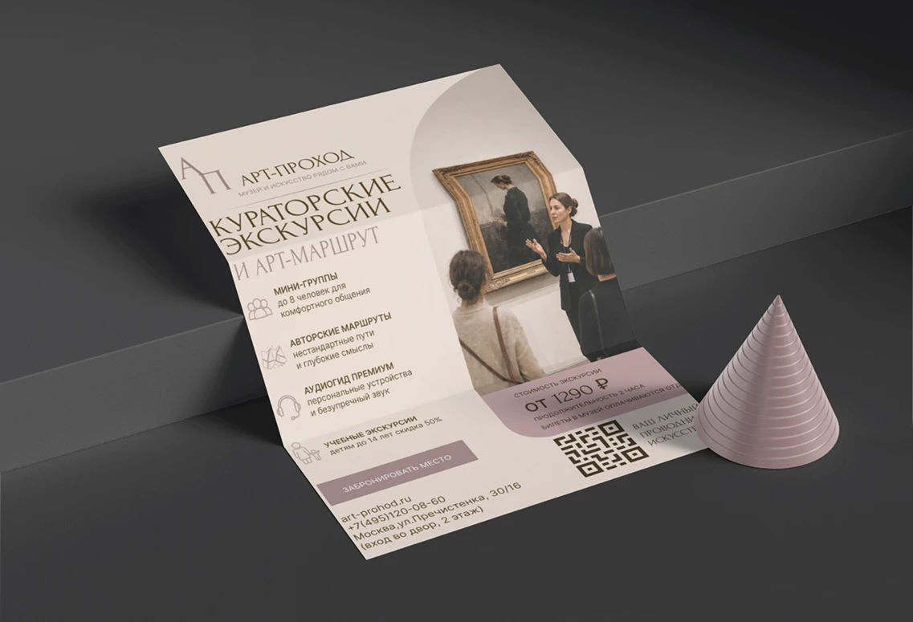

АРТ-ПРОХОД
Рекламная афиша сервиса кураторских экскурсий и арт-маршрутов по музею.

- Клиент
- АРТ-ПРОХОД — сервис музейных экскурсий
- Задача
- Прорекламировать услугу кураторских экскурсий, раскрыть преимущества формата (мини-группы до 8 человек, авторские маршруты, премиум-аудиогид, скидка 50% детям до 14 лет) и привести пользователя к бронированию.
- Роль
- Дизайн и вёрстка рекламной афиши.
Афиша продаёт формат экскурсии, а не абстрактный музей: главный визуальный якорь — фотография куратора, объясняющего картину мини-группе в интерьере зала. Задача — за секунды считать суть услуги и её ценностные отличия, а затем дать быстрый путь к брони.
Композиция двухколоночная. Слева — монограмма и логотип АРТ-ПРОХОД, крупный заголовок «Кураторские экскурсии и арт-маршрут» и список из четырёх преимуществ с иконками. Справа — фотография экскурсии. Нижний блок собирает конверсионный контур: цена «от 1290 ₽», длительность, кнопка «Забронировать место», контакты и QR-код на сайт. Тёплая бежевая база и пыльно-розовый акцент дают музейно-премиальную интонацию.

Готовая рекламная афиша с единой типографикой, ценовым блоком, призывом к действию и QR-кодом на сайт — пригодна для печати и расклейки.